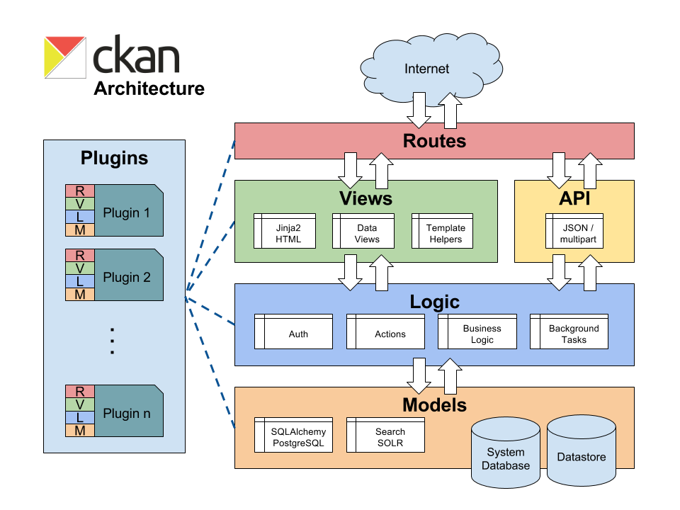

CKAN code architecture ¶
This section documents our CKAN-specific coding standards, which are guidelines for writing code that is consistent with the intended design and architecture of CKAN.

Routes ¶
Routes define the connection between CKAN URLs and views that process requests and provide responses.
Default routes are defined in
ckan.config.routing
and extended with the
ckan.plugins.interfaces.IRoutes
plugin interface.
Views ¶
Views process requests by reading and updating data with action
function and return a response by rendering Jinja2 templates.
CKAN views are defined in
ckan.controllers
and templates in
ckan.templates
.
Views and templates may use
logic.check_access
or
ckan.lib.helpers.check_access()
to hide links or render
helpful errors but action functions, not views, are responsible for
actually enforcing permissions checking.
Plugins define new views by adding or updating routes. For adding templates or helper functions from a plugin see Theming guide and Adding your own template helper functions .
Template helper functions ¶
Template helper functions are used for code that is reused frequently or code that is too complicated to be included in the templates themselves.
Template helpers should never perform expensive queries or update data.
ckan.lib.helpers
contains helper functions that can be used from
ckan.controllers
or from templates. When developing for ckan core, only use
the helper functions found in
ckan.lib.helpers.__allowed_functions__
.
Always go through the action functions ¶
Whenever some code, for example in
ckan.lib
or
ckan.controllers
, wants
to get, create, update or delete an object from CKAN’s model it should do so by
calling a function from the
ckan.logic.action
package, and
not
by
accessing
ckan.model
directly.
Use
get_action()
¶
Don’t call
logic.action
functions directly, instead use
get_action()
.
This allows plugins to override action functions using the
IActions
plugin
interface. For example:
ckan.logic.get_action('group_activity_list')(...)
Instead of
ckan.logic.action.get.group_activity_list(...)
Views and templates may check authorization to avoid rendering
Don’t pass ORM objects to templates ¶
Don’t pass SQLAlchemy ORM objects (e.g.
ckan.model.User
objects)
to templates (for example by adding them to
c
, passing them to
render()
in the
extra_vars
dict, returning them
from template helper functions, etc.)
Using ORM objects in the templates often creates SQLAlchemy “detached instance” errors that cause 500 Server Errors and can be difficult to debug.
Logic ¶
Logic includes action functions, auth functions, background tasks and business logic.
Action functions have a uniform interface accepting a dictionary of simple
strings lists, dictionaries or files (wrapped in a
cgi.FieldStorage
objects). They return simple dictionaries or raise one of a small number of
exceptions including
ckan.logic.NotAuthorized
,
ckan.logic.NotFound
and
ckan.logic.ValidationError
.
Plugins override action functions with the
ckan.plugins.interfaces.IActions
interface and auth functions
with the
ckan.plugins.interfaces.IAuthFunctions
interface.
Action functions are exposed in the API ¶
The functions in
ckan.logic.action
are exposed to the world as the
API guide
. The API URL for an action function is automatically generated
from the function name, for example
ckan.logic.action.create.package_create()
is exposed at
/api/action/package_create
. See
Steve Yegge’s Google platforms rant
for some
interesting discussion about APIs.
All
publicly visible functions in the
ckan.logic.action.{create,delete,get,update}
namespaces will be exposed
through the
API guide
.
This includes functions imported
by those
modules,
as well as any helper functions
defined within those modules. To
prevent inadvertent exposure of non-action functions through the action api,
care should be taken to:
-
Import modules correctly (see Imports ). For example:
import ckan.lib.search as search search.query_for(...)
-
Hide any locally defined helper functions:
def _a_useful_helper_function(x, y, z): '''This function is not exposed because it is marked as private``` return x+y+z
-
Bring imported convenience functions into the module namespace as private members:
_get_or_bust = logic.get_or_bust
Auth functions and
check_access()
¶
Each action function defined in
ckan.logic.action
should use its own
corresponding auth function defined in
ckan.logic.auth
. Instead of calling
its auth function directly, an action function should go through
ckan.logic.check_access
(which is aliased
_check_access
in the action
modules) because this allows plugins to override auth functions using the
IAuthFunctions
plugin interface. For example:
def package_show(context, data_dict):
_check_access('package_show', context, data_dict)
check_access
will raise an exception if the user is not authorized, which
the action function should not catch. When this happens the user will be shown
an authorization error in their browser (or will receive one in their response
from the API).
logic.get_or_bust()
¶
The
data_dict
parameter of logic action functions may be user provided, so
required files may be invalid or absent. Naive Code like:
id = data_dict['id']
may raise a
KeyError
and cause CKAN to crash with a 500 Server Error
and no message to explain what went wrong. Instead do:
id = _get_or_bust(data_dict, "id")
which will raise
ValidationError
if
"id"
is not in
data_dict
. The
ValidationError
will be caught and the user will get a 400 Bad Request
response and an error message explaining the problem.
Validation and
ckan.logic.schema
¶
Logic action functions can use schema defined in
ckan.logic.schema
to
validate the contents of the
data_dict
parameters that users pass to them.
An action function should first check for a custom schema provided in the
context, and failing that should retrieve its default schema directly, and
then call
_validate()
to validate and convert the data. For example, here
is the validation code from the
user_create()
action function:
schema = context.get('schema') or ckan.logic.schema.default_user_schema()
session = context['session']
validated_data_dict, errors = _validate(data_dict, schema, context)
if errors:
session.rollback()
raise ValidationError(errors)
Models ¶
Ideally SQLAlchemy should only be used within
ckan.model
and not from other
packages such as
ckan.logic
. For example instead of using an SQLAlchemy
query from the logic package to retrieve a particular user from the database,
we add a
get()
method to
ckan.model.user.User
:
@classmethod
def get(cls, user_id):
query = ...
.
.
.
return query.first()
Now we can call this method from the logic package.
Deprecation ¶
-
Anything that may be used by extensions , themes or API clients needs to maintain backward compatibility at call-site. For example: action functions, template helper functions and functions defined in the plugins toolkit.
-
The length of time of deprecation is evaluated on a function-by-function basis. At minimum, a function should be marked as deprecated during a point release.
-
To deprecate a function use the
ckan.lib.maintain.deprecated()decorator and add “deprecated” to the function’s docstring:@maintain.deprecated("helpers.get_action() is deprecated and will be removed " "in a future version of CKAN. Instead, please use the " "extra_vars param to render() in your controller to pass " "results from action functions to your templates.") def get_action(action_name, data_dict=None): '''Calls an action function from a template. Deprecated in CKAN 2.3.''' if data_dict is None: data_dict = {} return logic.get_action(action_name)({}, data_dict)
-
Any deprecated functions should be added to an API changes and deprecations section in the Changelog entry for the next release (do this before merging the deprecation into master)
-
Keep the deprecation messages passed to the decorator short, they appear in logs. Put longer explanations of why something was deprecated in the changelog.